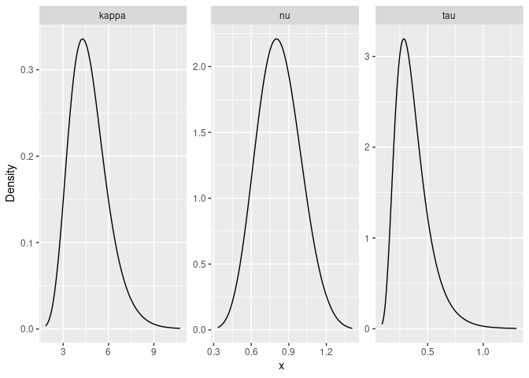
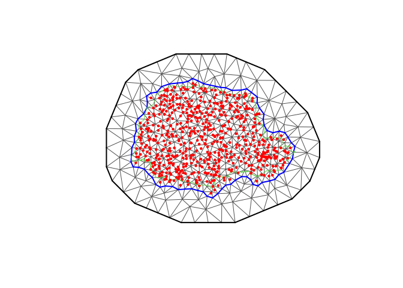
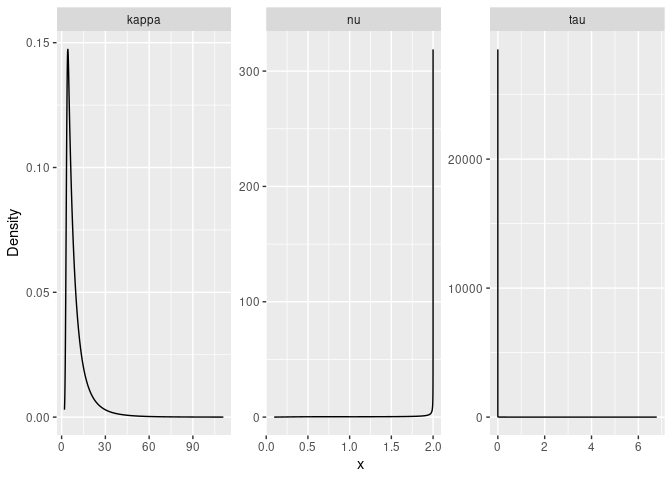

rSPDE is an R package used for computing rational approximations of fractional SPDEs. These rational approximations can be used for computatially efficient statistical inference.
Basic statistical operations such as likelihood evaluations and kriging predictions using the fractional approximations are also implemented. The package also contains an interface to R-INLA.
Introduction
Several popular Gaussian random field models can be represented as solutions to stochastic partial differential equations (SPDEs) of the form
Here is a Gaussian white noise, is a second-order differential operator, the fractional power determines the smoothness of , and scales the variance of . The simplest example is a model on with , which results in a Gaussian random field with a Matérn covariance function
If is an integer and if the domain where the model is defined is bounded, then can be approximated by a Gaussian Markov random field (GMRF) via a finite element method (FEM) for the SPDE. Specifically, the approximation can be written as
Here are piecewise linear basis functions defined by some triangulation of and the vector of weights is normally distributed, , where is sparse. See An explicit link between Gaussian fields and Gaussian Markov random fields: the stochastic partial differential equation approach for further details.
The rSPDE package provides corresponding computationally efficient approximations for the case when is a general fractional power. The main idea is to combine the FEM approximation with a rational approximation of the fractional operator. As a result, one can easily do inference and prediction using fractional SPDE models such as
In particular, it allows for bayesian inference of all model parameters, including the fractional parameter .
For illustration purposes, the package contains a simple FEM implementation for models on R. See the An introduction to the rSPDE package vignette for an introduction to the package. The Rational approximation with the rSPDE package and Operator-based rational approximation vignettes provide introductions to how to create and fit rSPDE models. For an introduction to the R-INLA implementation of the rSPDE models see the R-INLA implementation of the rational SPDE approach. The rSPDE documentation contains descriptions and examples of the functions in the rSPDE package.
Installation instructions
The latest CRAN release of the package can be installed directly from CRAN with install.packages("rSPDE"). The latest stable version (which is sometimes slightly more recent than the CRAN version), can be installed by using the command
remotes::install_github("davidbolin/rspde", ref = "stable")in R. The development version can be installed using the command
remotes::install_github("davidbolin/rspde", ref = "devel")If you want to install the package using the {r}emotes::install_github-method on Windows, you first need to install Rtools and add the paths to Rtools and gcc to the Windows PATH environment variable. This can be done for the current R session only using the commands
rtools = "C:\Rtools\bin"
gcc = "C:\Rtools\gcc-4.6.3\bin"
Sys.setenv(PATH = paste(c(gcc, rtools, Sys.getenv("PATH")), collapse = ";"))where the variables {r}tools and gcc need to be changed if Rtools is not installed directly on C:, and gcc’s version might need to be changed depending on the version of Rtools.
Example with rSPDE - INLA
We will illustrate the rSPDE package with a kriging example using our R-INLA interface to rSPDE.
The data consist of precipitation measurements from the Paraná region in Brazil and were provided by the Brazilian National Water Agency. The data were collected at 616 gauge stations in Paraná state, south of Brazil, for each day in 2011. We will not analyse the full spatio-temporal data set, but instead look at the total precipitation in January
For further details on the dataset and on the commands we refer the reader to the rSPDE-INLA Vignette.
library(rSPDE)
library(ggplot2)
library(INLA)
library(splancs)
library(viridis)
#Load the data
data(PRprec)
data(PRborder)
#Get the precipitation in January
Y <- rowMeans(PRprec[, 3 + 1:31])
#Treat the data and plot
ind <- !is.na(Y)
Y <- Y[ind]
coords <- as.matrix(PRprec[ind, 1:2])
alt <- PRprec$Altitude[ind]
ggplot() +
geom_point(aes(
x = coords[, 1], y = coords[, 2],
colour = Y
), size = 2, alpha = 1) +
geom_path(aes(x = PRborder[, 1], y = PRborder[, 2])) +
geom_path(aes(x = PRborder[1034:1078, 1], y = PRborder[
1034:1078,
2
]), colour = "red") +
scale_color_viridis()
#Get distance from the sea
seaDist <- apply(spDists(coords, PRborder[1034:1078, ], longlat = TRUE), 1,
min)
#Create the mesh
library(fmesher)
prdomain <- fm_nonconvex_hull(coords, -0.03, -0.05, resolution = c(100, 100))
prmesh <- fm_mesh_2d(boundary = prdomain, max.edge = c(0.45, 1), cutoff = 0.2)
plot(prmesh, asp = 1, main = "")
lines(PRborder, col = 3)
points(coords[, 1], coords[, 2], pch = 19, cex = 0.5, col = "red")
#Create the observation matrix
Abar <- rspde.make.A(mesh = prmesh, loc = coords)
#Create the rspde model object
rspde_model <- rspde.matern(mesh = prmesh)
#Create the index and inla.stack object
mesh.index <- rspde.make.index(name = "field", mesh = prmesh)
stk.dat <- inla.stack(
data = list(y = Y), A = list(Abar, 1), tag = "est",
effects = list(
c(
mesh.index
),
list(
seaDist = inla.group(seaDist),
Intercept = 1
)
)
)
#Create the formula object and fit the model
f.s <- y ~ -1 + Intercept + f(seaDist, model = "rw1") +
f(field, model = rspde_model)
rspde_fit <- inla(f.s, family = "Gamma", data = inla.stack.data(stk.dat),
verbose = FALSE,
control.inla=list(int.strategy='eb'),
control.predictor = list(A = inla.stack.A(stk.dat), compute = TRUE))
summary(rspde_fit)## Time used:
## Pre = 0.708, Running = 33.2, Post = 0.467, Total = 34.4
## Fixed effects:
## mean sd 0.025quant 0.5quant 0.975quant mode kld
## Intercept 1.944 0.06 1.826 1.944 2.062 1.944 0
##
## Random effects:
## Name Model
## seaDist RW1 model
## field CGeneric
##
## Model hyperparameters:
## mean sd 0.025quant
## Precision-parameter for the Gamma observations 13.928 9.96e-01 12.036
## Precision for seaDist 14386.771 1.51e+04 2853.544
## Theta1 for field 0.922 5.97e-01 -0.015
## Theta2 for field -0.321 1.16e+00 -2.956
## Theta3 for field -3.372 1.04e+00 -5.707
## 0.5quant 0.975quant mode
## Precision-parameter for the Gamma observations 13.904 15.95 13.883
## Precision for seaDist 9986.384 54051.12 5651.675
## Theta1 for field 0.855 2.28 0.524
## Theta2 for field -0.192 1.51 0.436
## Theta3 for field -3.279 -1.67 -2.787
##
## Marginal log-Likelihood: -1258.07
## is computed
## Posterior summaries for the linear predictor and the fitted values are computed
## (Posterior marginals needs also 'control.compute=list(return.marginals.predictor=TRUE)')
result_fit <- rspde.result(rspde_fit, "field", rspde_model)
summary(result_fit)## mean sd 0.025quant 0.5quant 0.975quant mode
## tau 3.063430 2.396990 0.9922460 2.310560 9.62796 1.4852200
## kappa 1.234930 1.217950 0.0537809 0.853753 4.46707 0.1197840
## nu 0.196414 0.167471 0.0136738 0.150182 0.63069 0.0369103
#Plot the posterior densities
posterior_df_fit <- gg_df(result_fit)
ggplot(posterior_df_fit) + geom_line(aes(x = x, y = y)) +
facet_wrap(~parameter, scales = "free") + labs(y = "Density")
#Create a grid to predict
nxy <- c(150, 100)
projgrid <- rspde.mesh.projector(prmesh,
xlim = range(PRborder[, 1]),
ylim = range(PRborder[, 2]), dims = nxy
)
xy.in <- inout(projgrid$lattice$loc, cbind(PRborder[, 1], PRborder[, 2]))
coord.prd <- projgrid$lattice$loc[xy.in, ]
#Compute A matrix and seaDist at predict locations and build the stack
A.prd <- projgrid$proj$A[xy.in, ]
seaDist.prd <- apply(spDists(coord.prd,
PRborder[1034:1078, ], longlat = TRUE), 1, min)
ef.prd = list(c(mesh.index),
list(long = inla.group(coord.prd[,
1]), lat = inla.group(coord.prd[, 2]),
seaDist = inla.group(seaDist.prd),
Intercept = 1))
stk.prd <- inla.stack(data = list(y = NA),
A = list(A.prd, 1), tag = "prd",
effects = ef.prd)
stk.all <- inla.stack(stk.dat, stk.prd)
rspde_fitprd <- inla(f.s,
family = "Gamma",
data = inla.stack.data(stk.all),
control.predictor = list(
A = inla.stack.A(stk.all),
compute = TRUE, link = 1
),
control.compute = list(
return.marginals = FALSE,
return.marginals.predictor = FALSE
),
control.inla = list(int.strategy = "eb")
)
id.prd <- inla.stack.index(stk.all, "prd")$data
m.prd <- rspde_fitprd$summary.fitted.values$mean[id.prd]
sd.prd <- rspde_fitprd$summary.fitted.values$sd[id.prd]
#Plot the predictions
pred_df <- data.frame(x1 = coord.prd[,1],
x2 = coord.prd[,2],
mean = m.prd,
sd = sd.prd)
ggplot(pred_df, aes(x = x1, y = x2, fill = mean)) +
geom_raster() +
scale_fill_viridis()Then, the std. deviations:
ggplot(pred_df, aes(x = x1, y = x2, fill = sd)) +
geom_raster() + scale_fill_viridis()Example with rSPDE - inlabru
We will now illustrate the rSPDE the same kriging example above with our inlabru interface to rSPDE. We will make this description self-contained, so we will not use any information or codes from the example above.
The data consist of precipitation measurements from the Paraná region in Brazil and were provided by the Brazilian National Water Agency. The data were collected at 616 gauge stations in Paraná state, south of Brazil, for each day in 2011. We will not analyse the full spatio-temporal data set, but instead look at the total precipitation in January
For further details on the dataset and on the commands we refer the reader to the rSPDE-inlabru Vignette.
library(rSPDE)
library(ggplot2)
library(INLA)
library(inlabru)
library(splancs)
#Load the data
data(PRprec)
data(PRborder)
#Get the precipitation in January
Y <- rowMeans(PRprec[, 3 + 1:31])
#Treat the data and plot
ind <- !is.na(Y)
Y <- Y[ind]
coords <- as.matrix(PRprec[ind, 1:2])
alt <- PRprec$Altitude[ind]
ggplot() +
geom_point(aes(
x = coords[, 1], y = coords[, 2],
colour = Y
), size = 2, alpha = 1) +
geom_path(aes(x = PRborder[, 1], y = PRborder[, 2])) +
geom_path(aes(x = PRborder[1034:1078, 1], y = PRborder[
1034:1078,
2
]), colour = "red") +
scale_color_viridis()
#Get distance from the sea
seaDist <- apply(spDists(coords, PRborder[1034:1078, ], longlat = TRUE), 1,
min)
#Create the mesh
library(fmesher)
prdomain <- fm_nonconvex_hull(coords, -0.03, -0.05, resolution = c(100, 100))
prmesh <- fm_mesh_2d(boundary = prdomain, max.edge = c(0.45, 1), cutoff = 0.2)
plot(prmesh, asp = 1, main = "")
lines(PRborder, col = 3)
points(coords[, 1], coords[, 2], pch = 19, cex = 0.5, col = "red")
#Create the rspde model object
rspde_model <- rspde.matern(mesh = prmesh)
#Create the data.frame
prdata <- data.frame(long = coords[,1], lat = coords[,2],
seaDist = inla.group(seaDist), y = Y)
coordinates(prdata) <- c("long","lat")
#Create the component
# The following synthax is available for inlabru version 2.5.3.9002 and above:
cmp <- y ~ Intercept(1) + distSea(seaDist, model="rw1") +
field(coordinates, model = rspde_model)
# For inlabru version 2.5.3 one should use:
cmp <- y ~ Intercept(1) + distSea(seaDist, model="rw1") +
field(coordinates, model = rspde_model)
# Fit the model
rspde_fit <- bru(cmp, family = "Gamma",
data = prdata,
options = list(
verbose = FALSE,
control.inla=list(int.strategy='eb'),
control.predictor = list(compute = TRUE))
)
summary(rspde_fit)## inlabru version: 2.11.1
## INLA version: 24.06.27
## Components:
## Intercept: main = linear(1), group = exchangeable(1L), replicate = iid(1L)
## distSea: main = rw1(seaDist), group = exchangeable(1L), replicate = iid(1L)
## field: main = cgeneric(coordinates), group = exchangeable(1L), replicate = iid(1L)
## Likelihoods:
## Family: 'Gamma'
## Data class: 'SpatialPointsDataFrame'
## Predictor: y ~ .
## Time used:
## Pre = 0.251, Running = 53.1, Post = 0.625, Total = 54
## Fixed effects:
## mean sd 0.025quant 0.5quant 0.975quant mode kld
## Intercept 1.915 1.592 -1.206 1.915 5.036 1.915 0
##
## Random effects:
## Name Model
## distSea RW1 model
## field CGeneric
##
## Model hyperparameters:
## mean sd 0.025quant
## Precision-parameter for the Gamma observations 13.956 9.70e-01 12.098
## Precision for distSea 24758.311 2.20e+04 2925.904
## Theta1 for field 0.841 1.54e-01 0.553
## Theta2 for field -2.888 1.11e+00 -5.195
## Theta3 for field -3.031 1.07e+00 -5.211
## 0.5quant 0.975quant mode
## Precision-parameter for the Gamma observations 13.938 15.912 13.938
## Precision for distSea 18438.553 82971.323 8316.958
## Theta1 for field 0.837 1.158 0.816
## Theta2 for field -2.847 -0.834 -2.657
## Theta3 for field -3.006 -1.000 -2.895
##
## Deviance Information Criterion (DIC) ...............: 2482.56
## Deviance Information Criterion (DIC, saturated) ....: 712.86
## Effective number of parameters .....................: 101.25
##
## Watanabe-Akaike information criterion (WAIC) ...: 2487.03
## Effective number of parameters .................: 91.57
##
## Marginal log-Likelihood: -1255.58
## is computed
## Posterior summaries for the linear predictor and the fitted values are computed
## (Posterior marginals needs also 'control.compute=list(return.marginals.predictor=TRUE)')
#Get the summary on the user's scale
result_fit <- rspde.result(rspde_fit, "field", rspde_model)
summary(result_fit)## mean sd 0.025quant 0.5quant 0.975quant mode
## tau 2.3466900 0.365564 1.74196000 2.3057000 3.172780 2.2150500
## kappa 0.0975622 0.121465 0.00567622 0.0587776 0.427417 0.0145705
## nu 0.2792790 0.278154 0.02219370 0.1899290 1.063150 0.0590764
#Plot the posterior densities
posterior_df_fit <- gg_df(result_fit)
ggplot(posterior_df_fit) + geom_line(aes(x = x, y = y)) +
facet_wrap(~parameter, scales = "free") + labs(y = "Density")
#Create a grid to predict
nxy <- c(150, 100)
projgrid <- rspde.mesh.projector(prmesh, xlim = range(PRborder[, 1]),
ylim = range(PRborder[,2]), dims = nxy)
xy.in <- inout(projgrid$lattice$loc, cbind(PRborder[, 1], PRborder[, 2]))
coord.prd <- projgrid$lattice$loc[xy.in, ]
#Compute seaDist at predict locations
seaDist.prd <- apply(spDists(coord.prd,
PRborder[1034:1078, ], longlat = TRUE), 1, min)
# Build the prediction data.frame()
coord.prd.df <- data.frame(x1 = coord.prd[,1],
x2 = coord.prd[,2])
coordinates(coord.prd.df) <- c("x1", "x2")
coord.prd.df$seaDist <- seaDist.prd
# Obtain prediction at the locations
pred_obs <- predict(rspde_fit, coord.prd.df,
~exp(Intercept + field + distSea))
# Prepare the plotting data.frame()
pred_df <- pred_obs@data
pred_df <- cbind(pred_df, pred_obs@coords)Finally, we plot the results. First the predicted mean:
ggplot(pred_df, aes(x = x1, y = x2, fill = mean)) +
geom_raster() +
scale_fill_viridis()Then, the std. deviations:
ggplot(pred_df, aes(x = x1, y = x2, fill = sd)) +
geom_raster() + scale_fill_viridis()